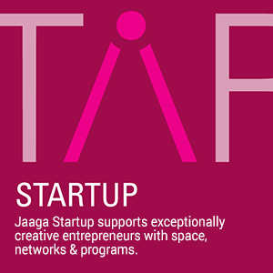
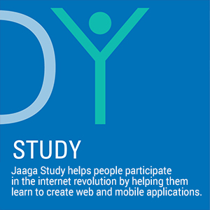
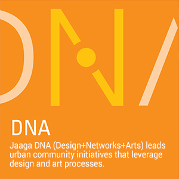

Jaaga Study takes place at Hamsah an organic farm just outside Bangalore city. We have a kitchen and cook that make local Indian vegetarian food. We have decent Internet via a collection of Airtel 4G routers. We study online, work on social service tech projects, do yoga, ride electric unicycles and generally have a good time. We’re also eager to have electronics people help us with our Electric Unicycles. We also have an The next batch will most likely start in April. I will post more about it in Jan or Feb 2017.


